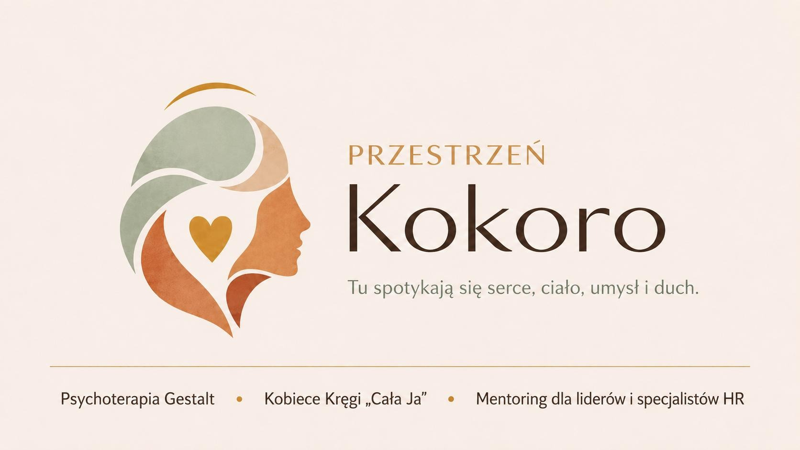
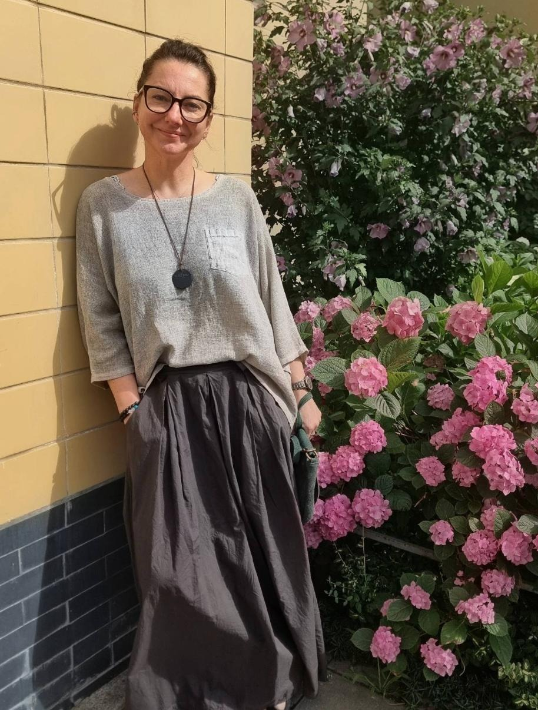
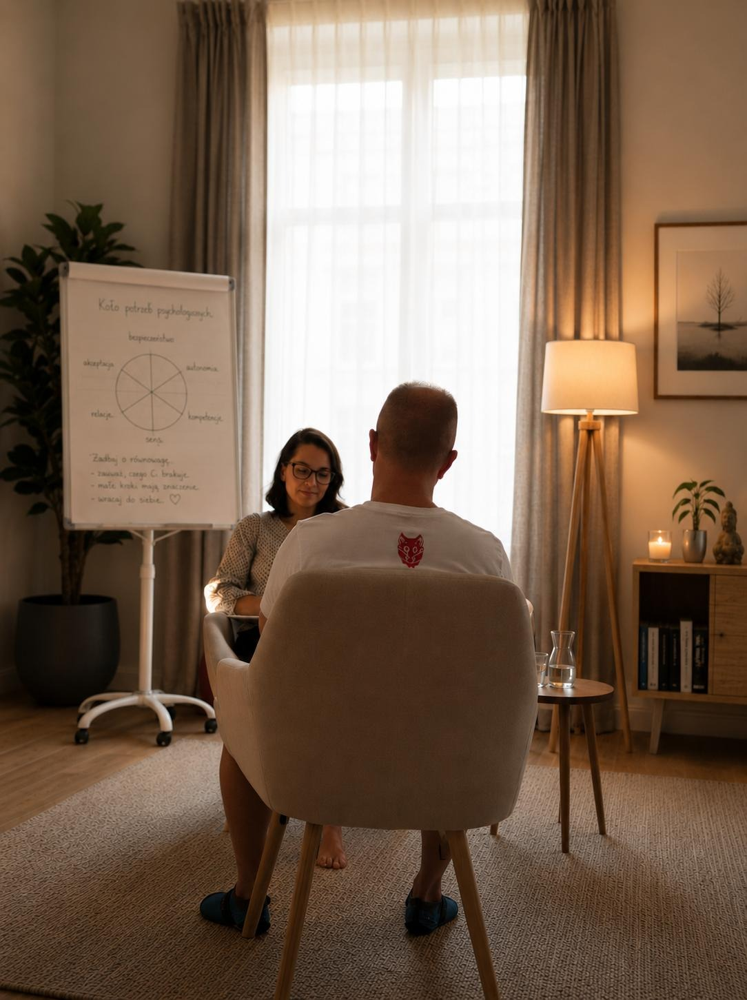
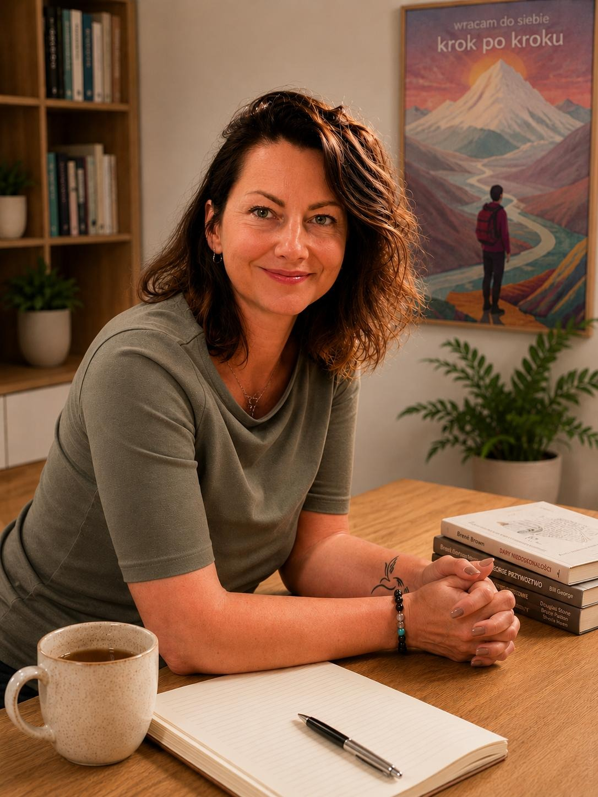
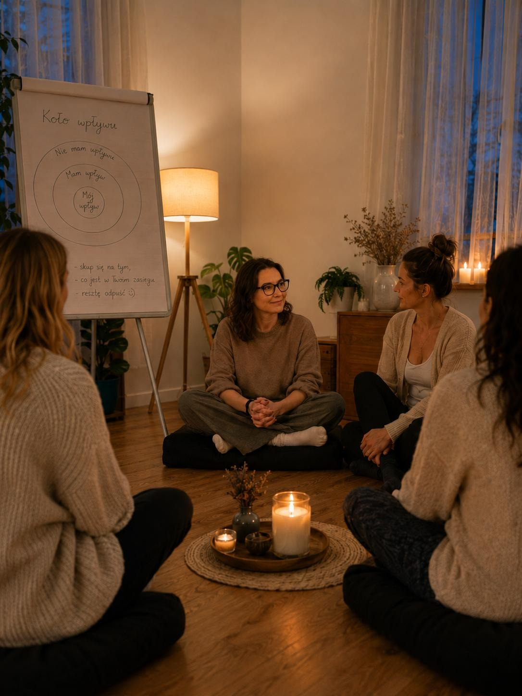
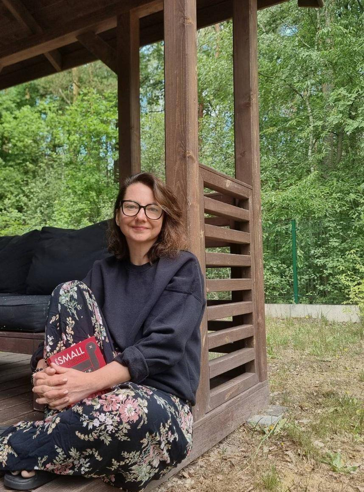

Jeśli tu jesteś, być może od jakiegoś czasu nosisz w sobie coś, z czym trudno Ci być samemu. Może szukasz zmiany. Może odpowiedzi. A może po prostu miejsca, w którym można na chwilę się zatrzymać.
Niezależnie od tego, z czym przychodzisz – jesteś mile widziana, jesteś mile widziany. Nie musisz wiedzieć, od czego zacząć. Nie musisz mieć wszystkiego poukładanego.
Na pierwszym spotkaniu nie szukamy gotowych rozwiązań. Najpierw poznajemy się i sprawdzamy, czy to jest przestrzeń, w której czujesz się bezpiecznie. Wierzę, że dobra relacja jest początkiem każdej zmiany.
Jeśli zdecydujesz się zrobić ten pierwszy krok, będzie mi miło Cię poznać.
Kamila

Kokoro powstało z potrzeby tworzenia miejsca, w którym człowiek może na chwilę się zatrzymać, odetchnąć i spotkać siebie.
Wierzę, że każdy z nas nosi w sobie zasoby potrzebne do zmiany. Czasem trudno je jednak dostrzec, szczególnie wtedy, gdy towarzyszy nam lęk, samotność, przeciążenie czy życiowy kryzys.
Sama doświadczyłam, jak wiele może zmienić obecność drugiego człowieka. Kogoś, kto nie ocenia, nie daje gotowych odpowiedzi i nie próbuje naprawiać, ale jest obok z uważnością i szacunkiem. Tak właśnie narodziło się Kokoro.
To przestrzeń, w której towarzyszę ludziom w lepszym poznawaniu siebie, odnajdywaniu własnych odpowiedzi i budowaniu życia bliżej swoich wartości.
Nie wszystko da się zmienić od razu. Czasem pierwszy krok to po prostu pozwolić sobie być dokładnie tam, gdzie jest się dzisiaj.

Indywidualne spotkania, w których jest miejsce na rozmowę, ciszę i wszystko to, z czym przychodzisz.
Dowiedz się więcej
Dla liderów i specjalistów HR, którzy chcą prowadzić ludzi w zgodzie ze sobą i swoimi wartościami.
Dowiedz się więcej
Cykl spotkań w kameralnej, stałej grupie — o wspólnym byciu, słuchaniu i powracaniu do siebie.
Dowiedz się więcej
Od wielu lat towarzyszę ludziom w ich rozwoju – najpierw w organizacjach, dziś również w gabinecie terapeutycznym i podczas Kobiecych Kręgów.
W pracy opieram się na założeniu, że każdy z nas ma w sobie zasoby potrzebne do zmiany. Czasem potrzebujemy jedynie bezpiecznej przestrzeni, aby móc je zobaczyć.
Dlatego w procesie towarzyszenia najważniejsze są dla mnie uważność, autentyczna relacja i zaciekawienie światem drugiego człowieka. Słucham, zadaję pytania i wspólnie z człowiekiem po drugiej stronie szukam tego, co pomaga jej/jemu lepiej rozumieć siebie.
Poza pracą najlepiej odpoczywam blisko natury, z kubkiem gorącej herbaty, dobrą książką albo podczas długich rozmów z bliskimi i ciekawymi ludźmi.
Zachwyca mnie świat w swojej mądrości i złożoności. To, że każdy z nas jest jego częścią i że dla każdego jest w nim miejsce.
Jeśli czujesz, że to może być dobra przestrzeń dla Ciebie, będzie mi miło Cię poznać.
Psychoterapia Gestalt
Psychoterapia jest dla mnie przede wszystkim spotkaniem dwóch osób. Spotkaniem, w którym jest miejsce na rozmowę, ciszę, emocje, wątpliwości i wszystko to, z czym przychodzisz. Możemy wspólnie przyglądać się temu, co jest dla Ciebie ważne – temu, co przeżywasz, czego potrzebujesz i czego być może jeszcze nie udało Ci się nazwać.
Pracuję w nurcie Gestalt – podejściu, które zakłada, że każdy człowiek ma w sobie potencjał do rozwoju i odnajdywania własnych odpowiedzi. Moją rolą nie jest mówić Ci, jak masz żyć, lecz towarzyszyć Ci w lepszym poznawaniu siebie.
Prowadzę indywidualne procesy terapeutyczne w nurcie Gestalt, będąc w trakcie całościowego szkolenia psychoterapeutycznego.
Nieustannie rozwijam swój warsztat, uczestnicząc w szkoleniu, własnej terapii oraz regularnej superwizji, ponieważ wierzę, że odpowiedzialność terapeuty zaczyna się od ciągłego rozwoju i pracy nad sobą.
Najważniejsza jest dla mnie relacja oparta na bezpieczeństwie, zaufaniu i autentycznym kontakcie. Właśnie w takiej relacji najłatwiej usłyszeć siebie i dostrzec to, co do tej pory pozostawało niewidoczne.
Pierwsza konsultacja jest okazją do poznania się. Porozmawiamy o tym, z czym przychodzisz, czego potrzebujesz i czego oczekujesz od terapii. Będzie też przestrzeń na Twoje pytania dotyczące sposobu mojej pracy. Na zakończenie wspólnie zdecydujemy, czy to odpowiedni moment i odpowiednia przestrzeń, aby rozpocząć dalszy proces.
Kobiece Kręgi „Cała Ja”
Kobiece Kręgi to cykl spotkań dla kobiet, które chcą na chwilę zatrzymać się w codziennym biegu i z większą uważnością przyjrzeć się sobie. To nie warsztaty i nie terapia grupowa. To przestrzeń wspólnego bycia, słuchania i dzielenia się tym, co ważne – we własnym tempie i tylko w takim zakresie, na jaki każda z nas jest gotowa.
Pracujemy w stałej, zamkniętej grupie, dzięki czemu z każdym kolejnym spotkaniem buduje się coraz więcej zaufania, bliskości i poczucia wspólnoty.
Wierzę, że wiele zmienia się nie tylko dzięki temu, co mówimy, ale również dzięki temu, że jesteśmy wysłuchane i nie musimy niczego udowadniać.
Każdy krąg jest osobnym spotkaniem i osobnym doświadczeniem. Razem tworzą proces, który prowadzi od pierwszego zatrzymania do głębszego kontaktu ze sobą. Zaglądamy między innymi w takie kobiece miejsca jak:
Dla kobiet, które:
Nie musisz mieć wcześniejszych doświadczeń z pracą rozwojową ani wiedzieć, czego dokładnie szukasz. Czasem wystarczy ciekawość i gotowość, żeby zrobić pierwszy krok.
Spotykamy się w kameralnej, stałej grupie. Każdy krąg trwa około 90 minut i ma swój temat przewodni. Pracujemy poprzez rozmowę, uważność, krótkie ćwiczenia inspirowane Gestalt oraz doświadczenie bycia w relacji z innymi kobietami.
Nie ma obowiązku mówienia. Można dzielić się tyle, ile jest się gotową. Można również po prostu być.
Mentoring dla liderów i specjalistów HR
Od kilkunastu lat wspieram liderów, zespoły i organizacje w budowaniu środowiska pracy opartego na zaufaniu, odpowiedzialności i partnerstwie. W mentoringu łączę wieloletnie doświadczenie zdobyte w obszarze People & Culture z podejściem Gestalt i filozofią Servant Leadership.
Podczas naszych spotkań nie szukamy gotowych rozwiązań. Zatrzymujemy się, przyglądamy sytuacji z różnych perspektyw i wspólnie szukamy kierunku, który będzie spójny z Tobą, Twoimi wartościami i wyzwaniami, przed którymi stoisz.
Jeśli chcesz lepiej poznać mój sposób myślenia o przywództwie i pracy z ludźmi, zapraszam do moich publikacji oraz rekomendacji osób, z którymi współpracowałam.
Jeśli czujesz, że to właśnie takie wsparcie jest Ci dziś potrzebne, napisz do mnie. Chętnie poznam Twoją historię i wspólnie zastanowimy się, co będzie najlepszym kolejnym krokiem.
Napisz do mnieJeśli masz pytania, chcesz umówić pierwsze spotkanie lub dowiedzieć się więcej o psychoterapii, Kobiecych Kręgach albo mentoringu – napisz lub zadzwoń. Jeżeli nie masz jeszcze pewności, to również jest w porządku. Czasem pierwszy krok zaczyna się od krótkiej wiadomości.